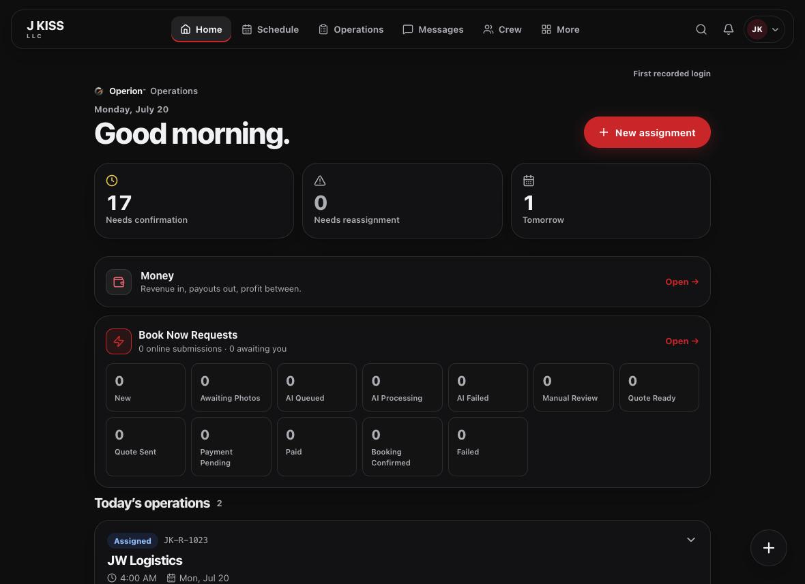
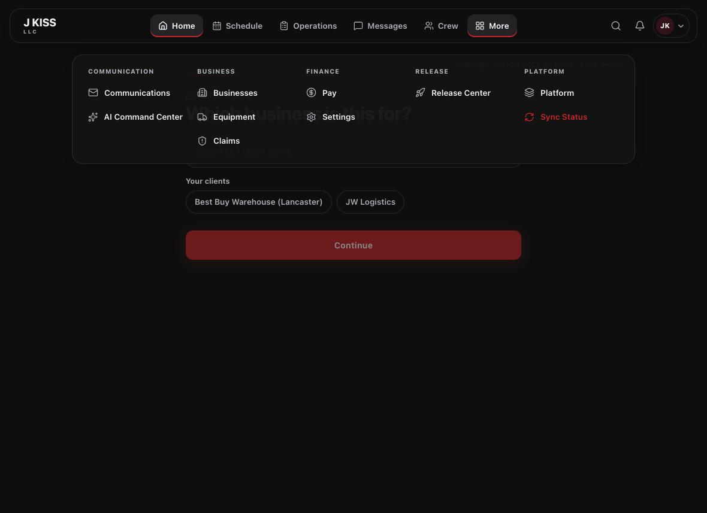
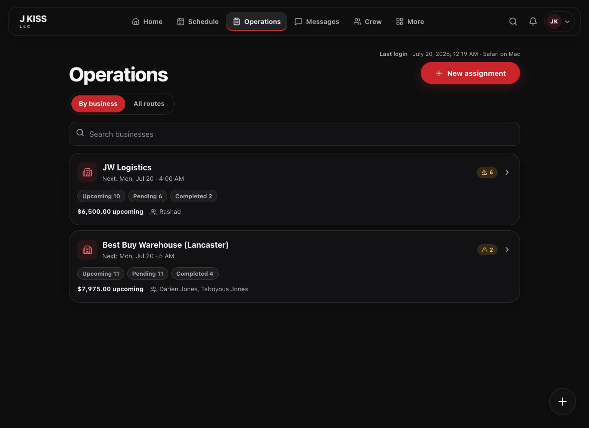
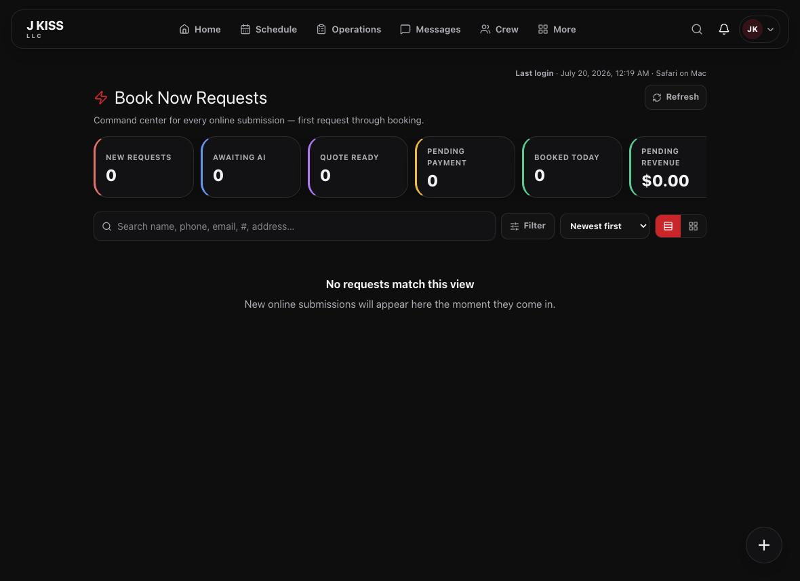
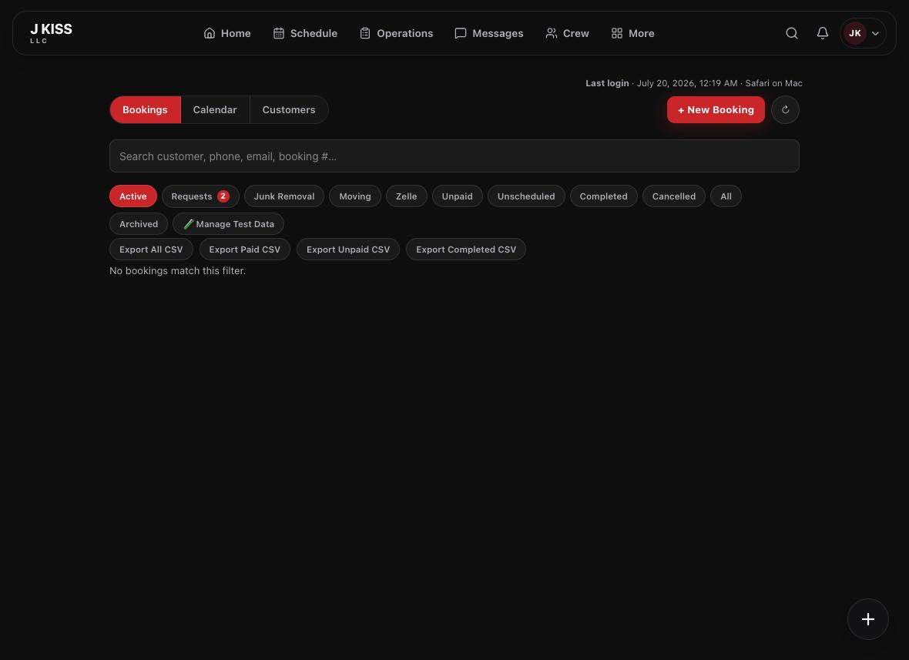
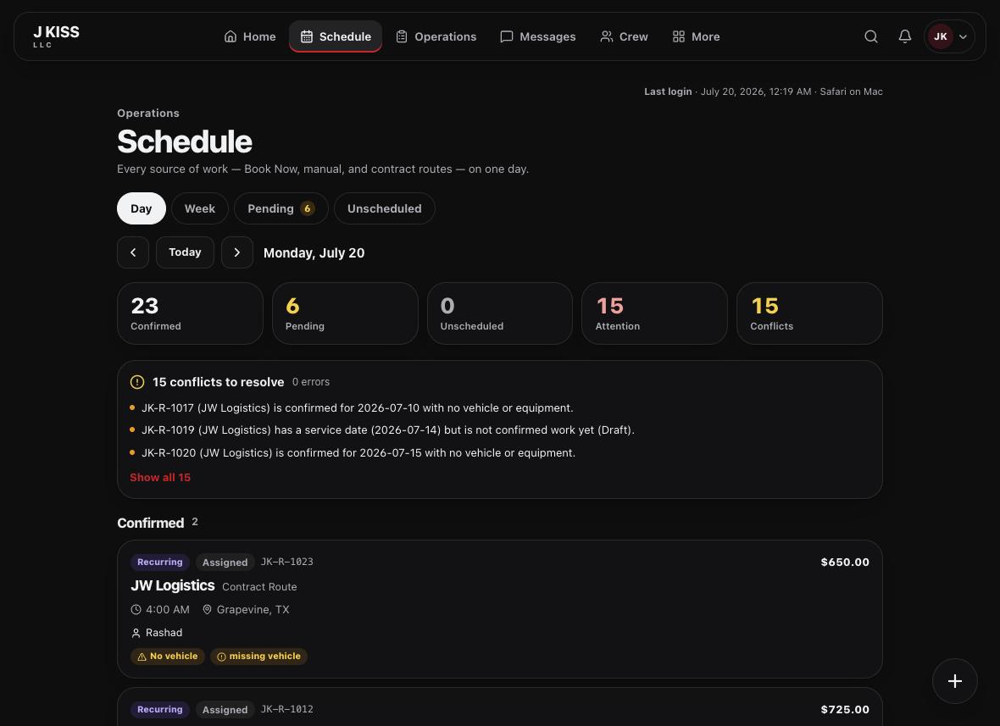
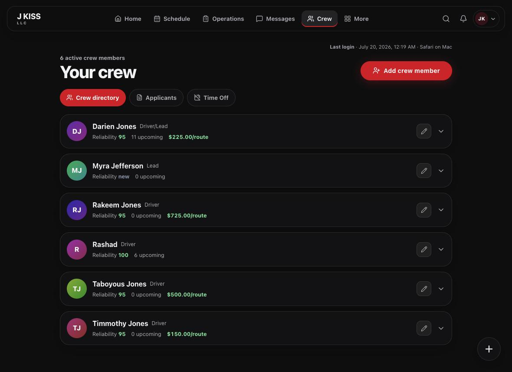
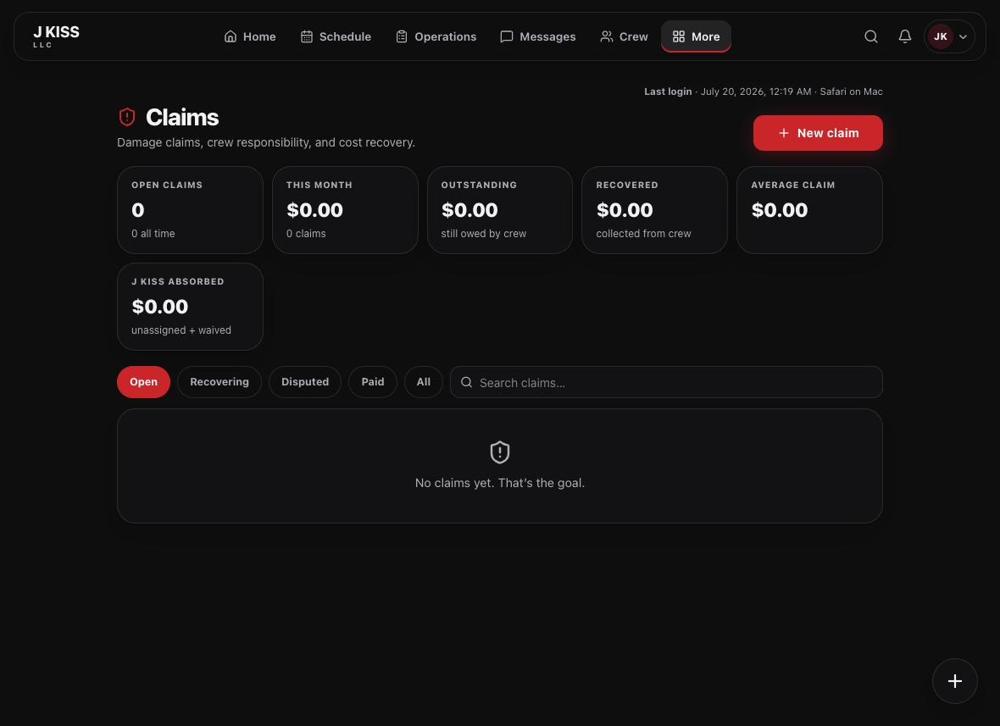
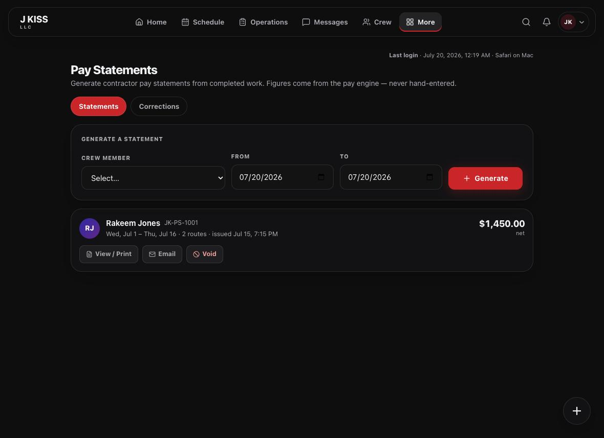
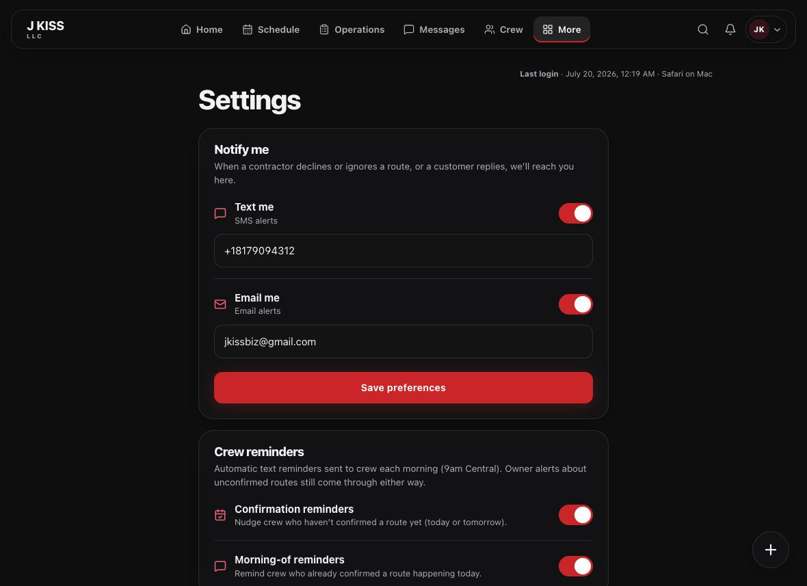

The complete reference for running your operation in Operion — every screen, every workflow, in plain language.
Complete referenceIllustratedOperator-first
J KISS LLC · jkissllc.com
Edition 2026.07
Contents
Everything, in order.
This guide is the full map of Operion for administrators. Start anywhere — each section stands on its own, with a picture of the real screen and only what you need to act.
1
Platform overview
How Operion is organized.
2
Navigation
Move anywhere in seconds.
3
Operations
Routes, statuses, dispatch.
4
Book Now
Online requests & AI quotes.
5
Customers & bookings
Jobs, notes, history.
6
Scheduling
The unified day board.
7
Crews
Your team & their pay.
8
Claims
Damage & cost recovery.
9
Analytics & money
Revenue, profit, trends.
10
Pay & statements
Contractor payouts.
11
Settings
Alerts & reminders.
12
AI Command Center
Quote accuracy & controls.
13
Release Center
Publish & roll back.
14
Security & reference
Access, tips, glossary.
1
Foundations
Platform overview
Operion runs your whole operation from one calm workspace. Everything traces back to two records: a booking (a customer’s job) and a route (the crew assignment that completes it).
Home

Your Home dashboard — the pulse of the day, with attention counts, online requests, and today’s operations.
◱
Admin workspace
Where you run operations, money, and people.
◑
Crew portal
Your team’s simplified app for jobs and pay.
◒
Public site
Where customers request quotes and track jobs.
🌙Dark by design. The admin workspace uses a single, focused dark theme so the numbers that matter stand out. After 5 pm, the dashboard shifts its focus to tomorrow.
2
Getting around
Navigation
Your everyday sections sit across the top; everything else lives one click away under More, neatly grouped.
More menu

The More menu, grouped by Communication, Business, Finance, Release, and Platform.
Where
What you’ll find
Top bar
Home · Schedule · Operations · Messages · Crew
More → Business
Businesses · Equipment · Claims
More → Finance
Pay · Settings
More → Release / Platform
Release Center · Platform · Sync (owner)
⌘The shortcut that matters. Press ⌘ K anywhere to jump to any page instantly. The floating + always starts a new assignment.
3
The core loop
Operations & dispatch
Routes are how work gets done. Create one, assign your crew, and let the status update itself as they respond.
Operations

The Operations board — grouped by business, with an attention badge on anything that needs you.
Status
Meaning
Your move
Draft → Assigned
Building the route; crew added
Send the assignment text
Awaiting confirm
Crew texted, not yet confirmed
Nudge if it’s close to the date
Confirmed
Everyone’s in
Mark complete on the day
Declined / No response
Needs attention
Reassign from the Attention filter
⚠︎Start every morning here. The Attention filter gathers declines, no-responses, and short-staffed routes. Clear it first and the day stays calm.
4
Intake
Book Now & AI quotes
When customers request a quote online, Operion reads their photos and suggests a price. You work the queue — approving the clear ones and pricing the rest.
Book Now Requests

Every online submission, tracked by stage from new request through booked.
Clear, single-load jobs get an instant quote.
Uncertain jobs — hazards, big loads, unclear photos — go to Manual Review for you.
Moving and delivery jobs are always priced by hand, never by AI.
Your pricing rules always set the final number; the AI only observes.
✓Daily rhythm. Clear Manual Review first, then send the Quote Ready ones.
5
Customers
Bookings & customer records
Customer information lives on the booking. The Bookings dashboard is your search, filter, and history for every job.
Bookings

Filter by status, export to CSV, or switch to the Calendar and Customers views.
Do this
How
Find a job
Search by name, phone, email, or booking number
Focus the list
Status filters: unpaid, unscheduled, completed, and more
Keep notes
Internal notes on the booking — never shown to the customer
See a customer’s history
The Customers tab rolls up jobs, spend, and last service
◱No separate CRM. A customer’s details, notes, photos, and message history all live on their booking — one place, always in context.
6
Timing
Scheduling
The schedule shows online bookings and crew routes together, on one board — and flags conflicts before they bite.
Schedule

Day and Week views, with confirmed and pending lanes and a running conflict count.
⚠︎Resolve conflicts early. Operion flags the same crew, truck, or time booked twice. Clear these before the day starts.
👆Read-only by design. The schedule is for seeing your day. To change a job, open its card and edit the booking or route directly.
7
People
Crews
Your crew hub holds every team member — their role, reliability, pay, and upcoming work.
Your crew

The crew directory, with reliability, pay per route, and a quick add. Sample data shown.
Two records, two steps
Where
A crew member (roster entry)
Add on the Crew hub — no login by itself
A login for that crew member
Create in Team & Access, linked to the roster entry
◷Availability & time off. Crew submit their availability and time-off in the portal; you approve time-off and see who’s free before assigning.
8
Recovery
Claims
Claims track damage and cost recovery — who’s responsible, how much, and how it gets paid back.
Claims

Open, outstanding, recovered, and absorbed — the whole recovery picture at a glance.
Open a claim from a completed route — it snapshots the job automatically.
Assign responsibility across the crew, equally or by percent or dollar.
Recover with a weekly deduction (capped at real earnings), a cash payment, or a waiver.
Close it when settled — every step is logged.
◆Deletes are guarded. Once money is recovered, deleting a claim needs confirmation — it erases the record of why a contractor’s pay changed.
9
Money
Analytics & finance
Two views answer the money questions: Money for profit on the work you’re doing, and Analytics for the trend.
Money
Revenue in, paid out, and estimated profit — filterable by date, business, and crew.
Revenue in
Billed
completed work
Paid out
Crew
driver + helper
Profit
Margin
the difference
Outstanding
Owed
from Analytics
↗Analytics adds the trend. Revenue by period, service, city, and ZIP, plus outstanding balances and an AI-written summary of your numbers.
10
Payouts
Pay & statements
Generate contractor statements from completed work. Every figure comes from the pay engine — never hand-entered.
Pay Statements

Pick a crew member and period, generate, then view, print, email, or void. Sample data shown.
Action
What it does
Generate
Builds the statement from completed routes, net of claim deductions
View / Print
Opens a printable statement (Save as PDF)
Email
Sends it to the crew member; they also see it in the portal
Corrections
Review and approve crew-submitted correction requests
11
Configuration
Settings
Settings is short on purpose. It controls how Operion reaches you, and how it nudges your crew.
Settings

Owner alerts and crew reminders, on or off, with the destinations you choose. Contact details redacted in the shipped guide.
Setting
Effect
Text / Email me
Where Operion sends owner alerts (declines, replies)
Confirmation reminders
Morning nudge to crew who haven’t confirmed
Morning-of reminders
Day-of reminder to confirmed crew
Show crew their pay
Whether crew see pay amounts in the portal
🔧More configuration nearby. Availability (online capacity & deposit), disposal pricing, equipment, promo codes, and your cancellation policy each have their own page.
12
Owner-only
AI Command Center
A calm cockpit for the AI that quotes your jobs — how ready it is, how accurate it’s getting, and what it costs.
AI Command Center
Live model, readiness, system health, and a single recommended next step.
✳︎Two truths. Customers only ever see the proven model; a newer version runs in shadow to prove itself first. Your pricing always sets the final number.
◱The one control. A kill switch can pause the shadow model’s work instantly — it never affects live quoting or your data.
13
Owner-only
Release Center
Where the owner publishes a new version of a product live, or safely rolls back — always behind a typed confirmation.
Release Center
Every product with its status — up to date, needs setup, or needs attention.
◆Owner action. Reviewing what changed is always safe. Publishing and rolling back each require the owner to type an exact confirmation phrase, and only take effect on the live product. See the Owner Guide for the full workflow.
14
Access & reference
Security, tips & glossary
Who can do what, the habits that keep you fast, and the words you’ll hear.
Who can do what
Role
Can
Cannot
Owner
Everything, incl. publishing & rollback
—
Administrator
Run operations, money, people, settings
Owner-only release actions
Manager
Day-to-day operations
Settings, roles, pay config
Crew
Their own jobs & pay (portal)
Anything beyond themselves
🔒Sessions. You’re signed out after 10 minutes idle. Access is enforced behind the scenes — a hidden menu is never the only lock.
Words you’ll hear
Booking — a customer’s job.
Route — the crew’s dispatch for it.
Book Now — the online request queue.
Manual Review — a quote handed to you.
Statement / Invoice — pay crew / bill clients.
Release Center — publish & roll back (owner).
💬Where to go next. New team members start with the Quick Start Guide; owners use the Owner Guide for money, AI, and releases.